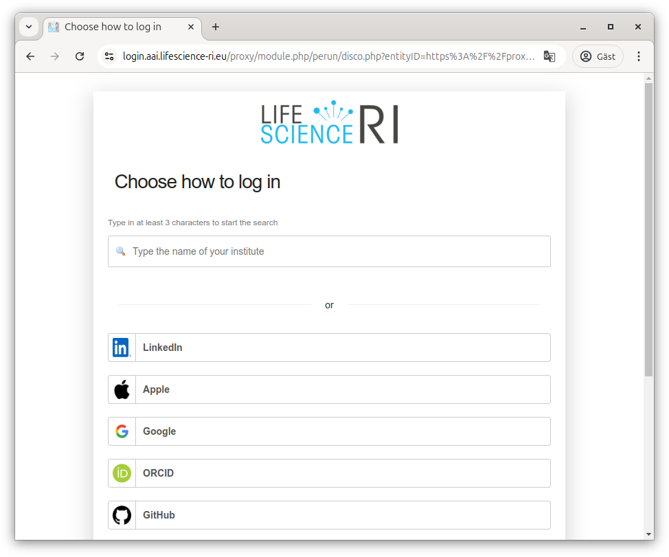
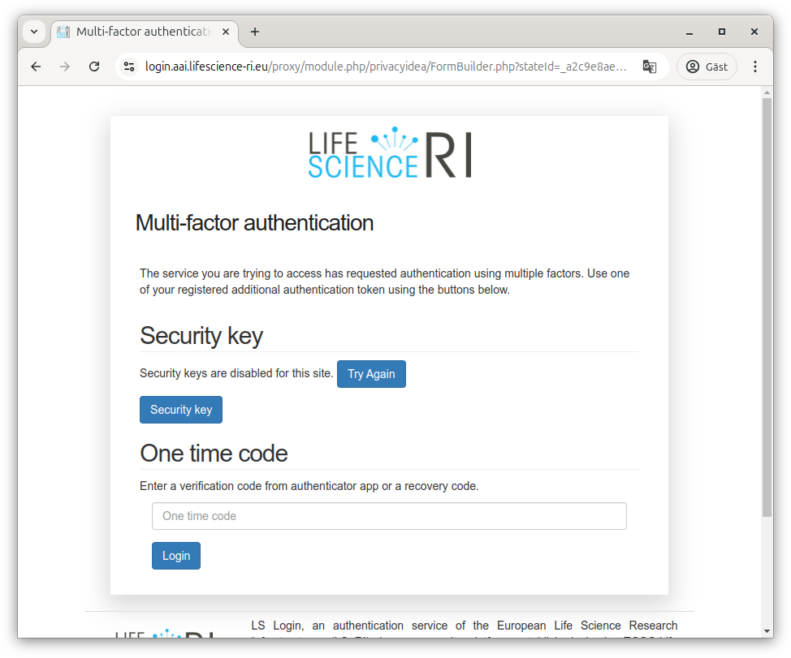
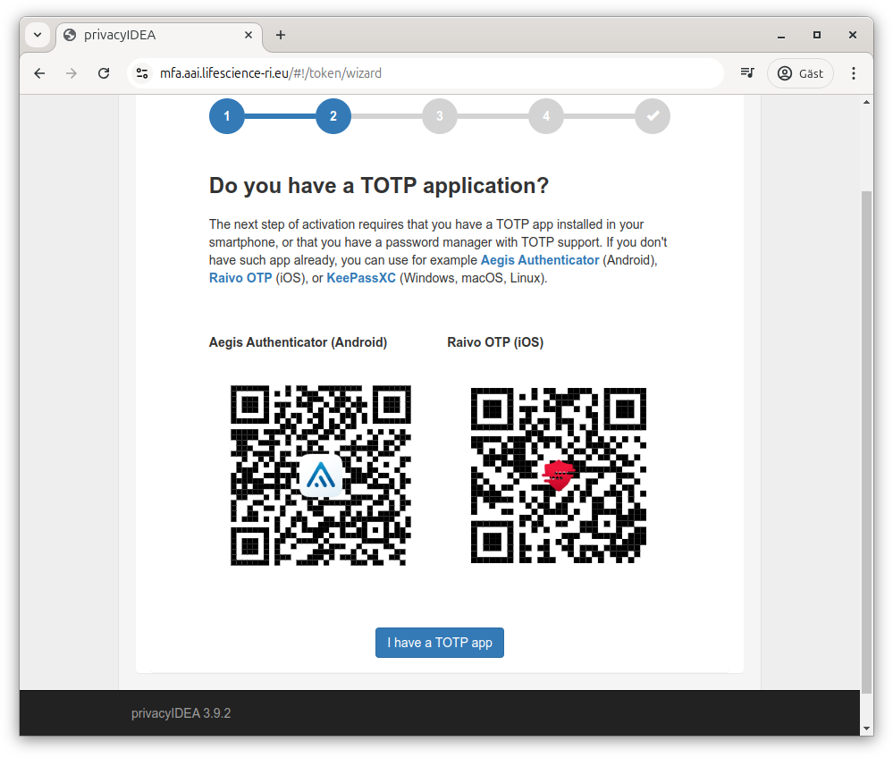
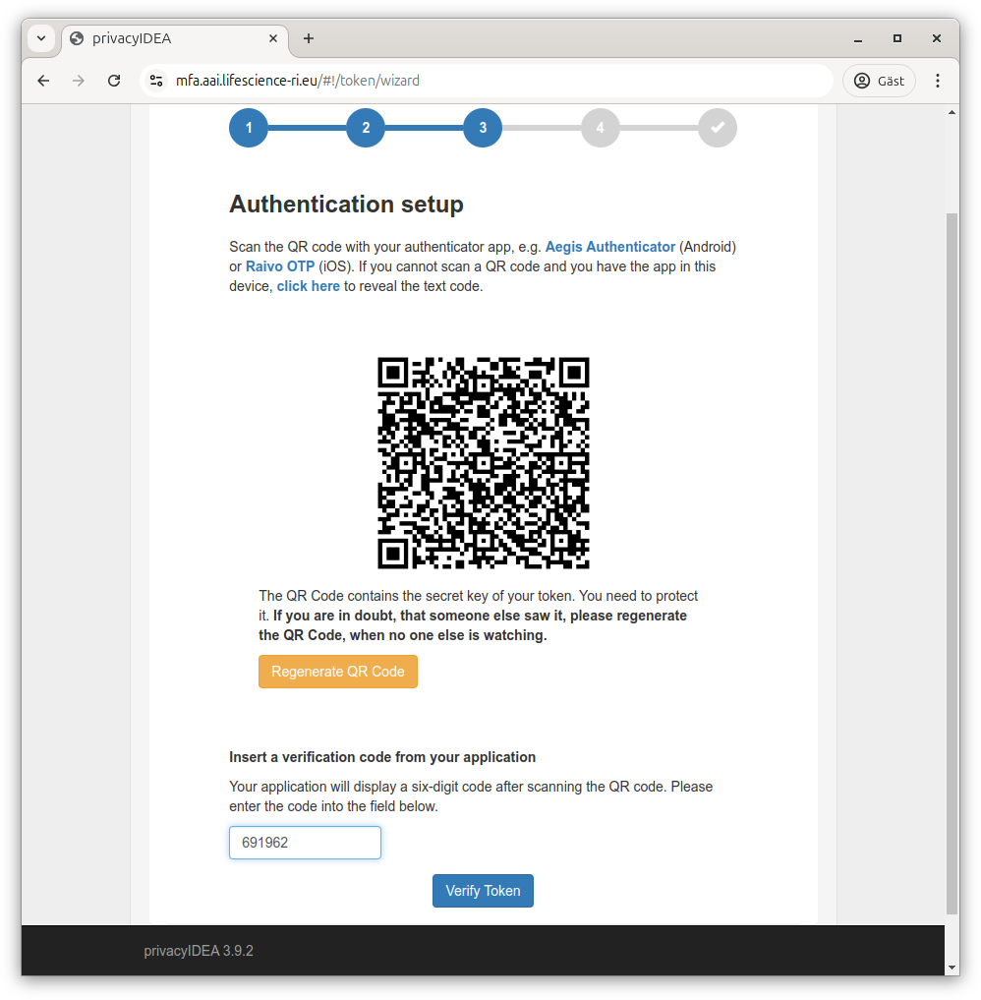
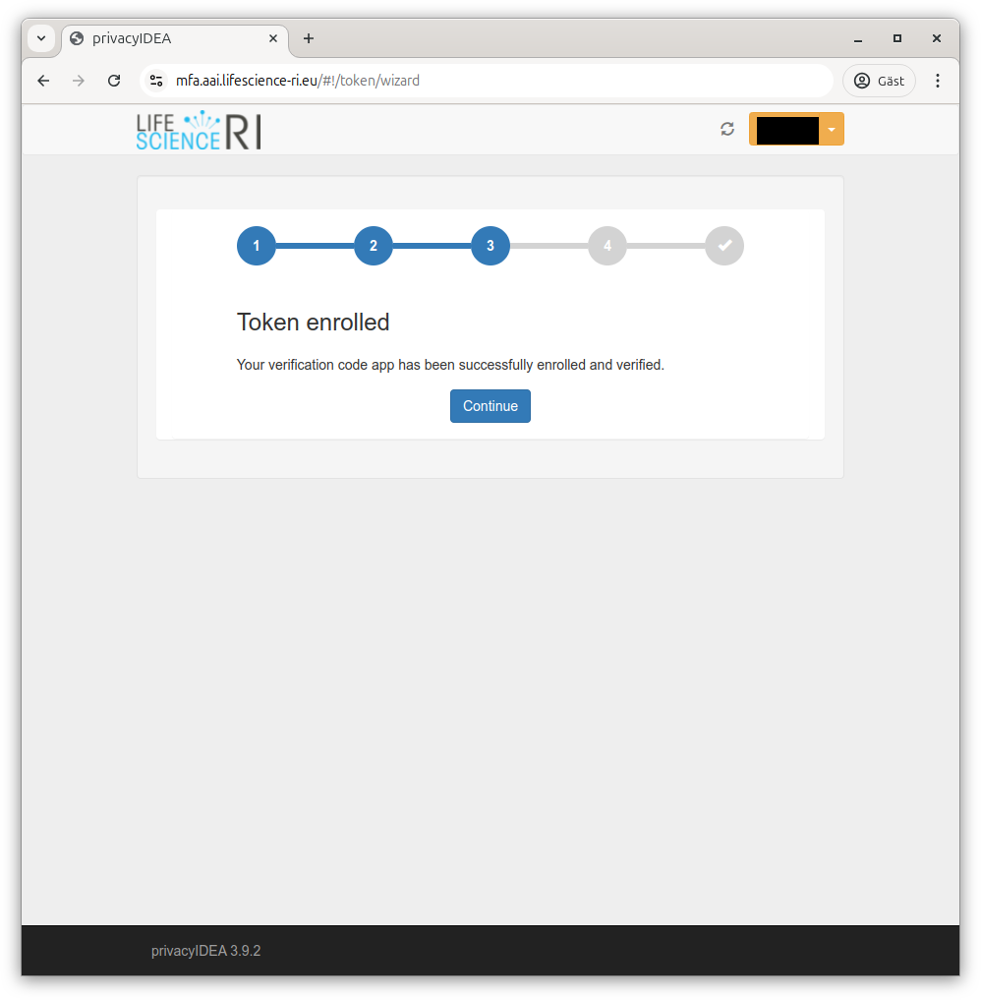
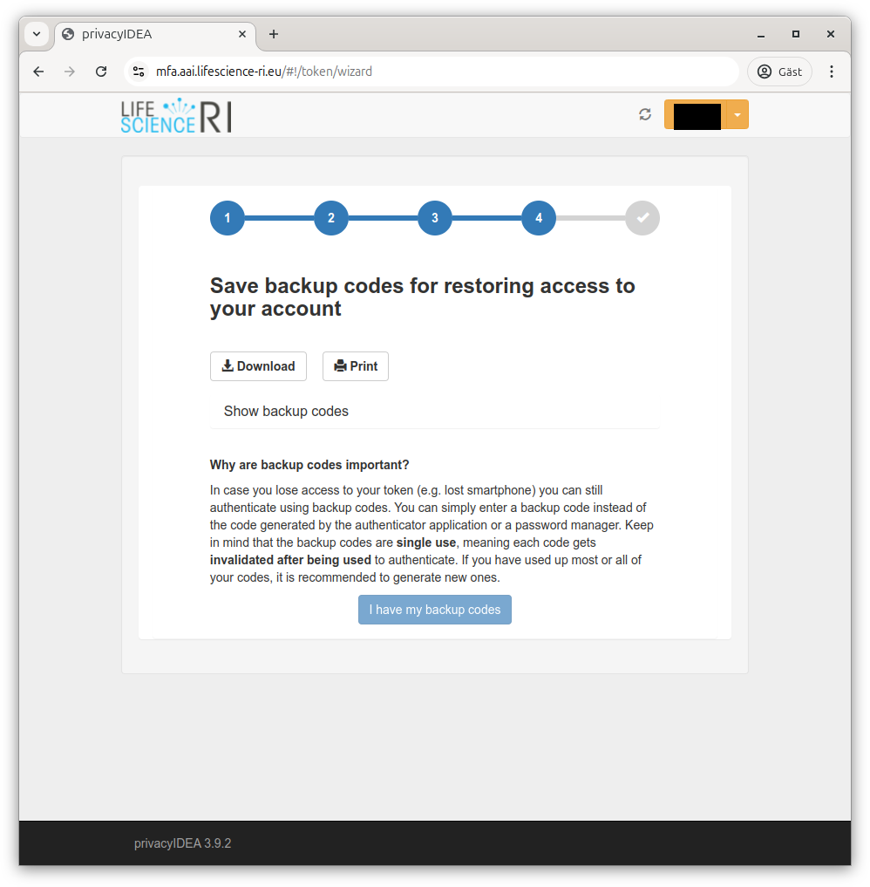
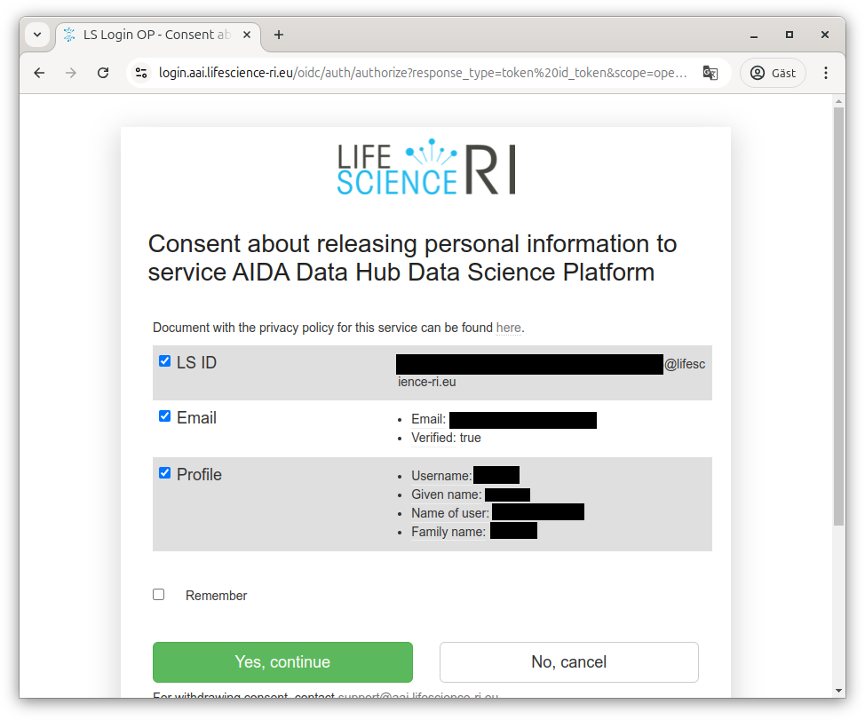

Life Science federation login
AIDA Data Hub uses the Life Science federated login, a services operated by the European Life Science Research Infrastructures to greatly simplify authentication.
When you select to login to our services, you will be taken to the Life Science Login federated authentication, and will be greeted by a screen where you can choose between different services, or type the name of your home organisation to authenticate there if they are available (will likely be the case for academia).

If your organisation is not available, there are other common services that can be used for authentication (e.g. ORCID, GitHub, LinkedIn, Google, Apple), or if you don't want to or are able to use one of these, you can use "LifeScience Hostel" instead which allows signing up at LS Login directly.
Using your home organisation email
If you use one of these other services, we recommend changing your profile email to the one from your home organisation. This can be done on the LS Login User Profile site; look for "Preferred mail" and click the pen to update the mail (note that the new email must be verified which may take some time).

Multifactor authentication
Once logged in, you would normally be passed back to the service that requested authentication. But as our services support working with sensitive data, you will also be required to use multi-factor authentication (somewhat simplified that means just knowing a password should not be enough, typically something more such as having a physical object should be required).
With Life Science Login, this means you will be asked to provide a second factor before being able to advance to our services.
If Life Science Login needs to do multifactor authentication by itself, you will be sent to the Life Science Login MFA site.
For clarity; there's nothing wrong with using a hardware token (e.g. USB key) or other solution, but since the Time-based One-Time Password (TOTP) support is the common denominator, that's shown here.
.
Since Life Science Login tries to be useful, it supports using modern standards for authentication over the web. Unfortunately, that may mean you get different behaviours depending on what web browser you are using, whatever you have any helper extensions (e.g. password manager), if you have a USB-key connect and possibly even if you have a phone nearby.
Since those behaviours differ so much, we won't show them.
Enrolling a new token for multifactor authentication
When arriving at the MFA site the first time, it will tell you who you are authenticated as in Life Science Login and inform you that you get in without additional credentials this time.

You will then be guided through the enrollment flow, starting with the ability to name your token.

Next, the flow tries to ensure you have a TOTP application available. It suggests alternatives for Android and iOS, but you don't need to use those applications as TOTP is a standard. The list of working apps include Twilio Authy, Google Authenticator, Microsoft Authenticator, FortiToken, Duo security authentication, common password managers and many more.
If you do not already use two-factor authentication with an app, we strongly recommend choosing one that supports some kind of secure network synchronisation to handle cases where your device stops working (this should do encryption on device).

Once you have confirmed you have an app, it will show you a QR code for easy addition of the second factor. If you are using a phone, you should be able to scan that and hopefully have the account added automatically.
If not, you can ask it to reveal the secret as text and add that to your MFA solution manually.
Once you have added the account to your solution, it should present you with the current code (this will update regularly, at any time it is requested you should enter what is currently shown).

If that works, it will remember that you have registered the account on your side. It calls with that the "token is enrolled"

It will then let you know that multifactor authentication has been activated.

Next, it will inform you about backup codes (in case you loose your phone or similar). Even if you have a solution that helps with network backup, downloading backup codes and storing them securely is strongly recommended.

Once you've done that, MFA activation is complete.

Attribute release
To operate our services, we need some additional details about you from Life Science Login. For them to be able to pass them to us, they need you to acknowledge that:
Click "Yes, continue" to let Life Science Login give us those details. If you want to, you can choose "Remember" not to have to click through that screen the next time.

Back to AIDA Data Hub services
Once you've registered and accepted that our services can get additional details, you should be redirected back to the service for which you originally initiated the log in. You will now be able to use the same Life Science login profile for all of the AIDA Data Hub services (as well as any other of the European research infrastructures using it).